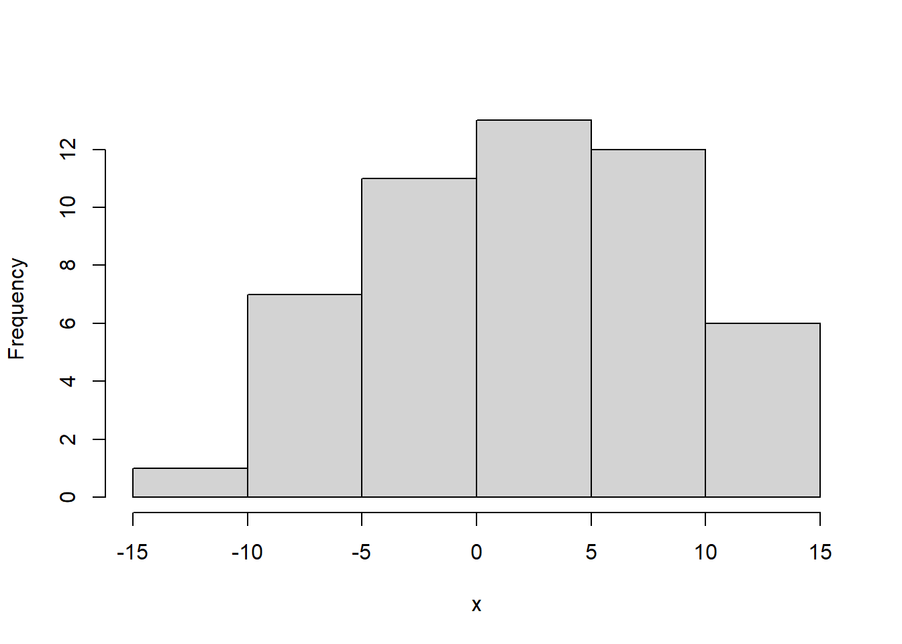

Distribuciones de probabilidad discretas
Variable aleatoria discreta
En cualquier experimento, existen numerosas caracterÃsticas que pueden ser observadas, cada resultado de un experimento puede ser asociado con un número, especificando una regla de asociación llamada variable aleatoria.
Una variable aleatoria le corresponde una función, cuyo dominio es el espacio muestral y cuyo rango es el conjunto de números reales, cada elemento del rango tiene una probabilidad de ocurrencia.
| Experimento | Variable aleatoria | Posibles valores (rango) |
|---|---|---|
| Tirar al aire dos monedas | Nro de caras observadas al lanzar las dos monedas | 0,1,2 |
| Seleccionar 5 clientes | Nro clientes al dÃa | 0,1,2,3,4,5 |
| venta de un automovil | genero cliente | 0 hombre, 1 mujer |
| Tirar al aire dos dados | Numero al Sumar los dos dados | 2,3,4,5,6,7,8,9,10,11,12 |
Función de distribución de probabilidad
Es un gráfico tabla o formula que especifica la probabilidad asociada con cada posible salida de la variable aleatoria.
Propiedades
- \(0\leq f(x_i)\leq1\)
- \[\sum_{i=1}^nf(x_i)=1\]
- \(f(x_i)=P(x=x_i)\)
Ejemplo
Se lanzan dos dados, Sea x la variable aleatoria obtenida al sumar el par de números de los dados.

Probabilidad
En total se tienen 36 opciones diferentes:
| Vble aleatoria | veces observado | \(P(X=x)\) |
|---|---|---|
| 2 | 1 | 1/36 |
| 3 | 2 | 2/36 |
| 4 | 3 | 3/36 |
| 5 | 4 | 4/36 |
| 6 | 5 | 5/36 |
| 7 | 6 | 6/36 |
| 8 | 5 | 5/36 |
| 9 | 4 | 4/36 |
| 10 | 3 | 3/36 |
| 11 | 2 | 2/36 |
| 12 | 1 | 1/36 |
| 12 | 1 | 1/36 |

Probabilidad
Cuál es la probabilidad de que:
La suma sea al menos 8:
\[P(X\geq 8)=15/36\]
La suma sea como máximo 5
\[P(X\leq 5)=10/36\] La suma este entre 5 y 10 inclusive
\[P(5\leq X\leq 10)=27/36\]
Esperanza y varianza de una variable aleatoria discreta
Media o valor esperado
\[E(X)=\mu=\sum_{i=1}^nx_if(x_i) \]
Esperanza de \(X^2\)
\[E(X^2)=\sum_{i=1}^nx_i^2f(x_i) \] Varianza y desviación estándar
\[V(x)=E(X^2)-\mu^2\] \[sd=\sqrt{v(x)}\]
Propiedades del operador esperanza
Sean x y y dos variables aleatorias con esperanza finita y sea c una constante. Entonces
E(c)=c
E(cx)=cE(x)
Si \(x\geq 0\) entonces \(E(x)\geq 0\)
E(x+y)=E(x)+E(y)
Si x y y son independientes entonces
\[E(xy)=E(x)E(y)\] - \[\Large E(a+bx)=a+bE(x)\]
Propiedades de la varianza
\(var(x)\geq0\)
var(c)=0
\(Var(cx)=c^2 Var(x)\)
var (x+c)=var(x)
\(var(x)=E(x^2)-\mu^2\)
\(var(x+y) \neq var(x)+var(y)\)
Propiedades de la esperanza y de la varianza
continuación del ejemplo 1. Cual es la suma esperada al lanzar los dos dados? 2. Cual es la varianza y desviación estándar de la distribución?
| Vble aleatoria | \(P(X=x)\) | \(xf(x)\) | \(x^2f(x)\) |
|---|---|---|---|
| 2 | 1/36 | 2/36 | 4/36 |
| 3 | 2/36 | 6/36 | 18/36 |
| 4 | 3/36 | 12/36 | 48/36 |
| 5 | 4/36 | 20/36 | 100/36 |
| 6 | 5/36 | 30/36 | 180/36 |
| 7 | 6/36 | 42/36 | |
| 8 | 5/36 | 40/36 | |
| 9 | 4/36 | ||
| 10 | 3/36 | ||
| 11 | 2/36 | ||
| 12 | 1/36 | ||
| Total | 1 | \(E(X)=\) | \(E(X^2)=\) |
Función de densidad de probabilidad acumulada F(x)
La función de distribución acumulativa (fda) F(x) de una variable aleatoria discreta X con función masa de probabilidad f(x) se define para cada número x como
\[F(X)=P(X\leq x)=\sum_{i=1}^nf(x_i) \]
Para cualquier número x, F(x) es la probabilidad de que el valor observado de X será cuando mucho x.
Para una variable aleatoria discreta X, la gráfica de F(x) mostrará un salto con cada valor posible de X y será plana entre los valores posibles. Tal gráfica se conoce como función escalonada.
continuación del ejemplo
| Vble aleatoria x | \(P(X=x)\) | \(F(x)=P(x\leq x)\) |
|---|---|---|
| 2 | 1/36 | 1/36 |
| 3 | 2/36 | 3/36 |
| 4 | 3/36 | 6/36 |
| 5 | 4/36 | 10/36 |
| 6 | 5/36 | 15/36 |
| 7 | 6/36 | 21/36 |
| 8 | 5/36 | 26/36 |
| 9 | 4/36 | 30/36 |
| 10 | 3/36 | |
| 11 | 2/36 | |
| 12 | 1/36 | 36/36 |
| Total | 1 |
\[ F(x)=\begin{cases} 0 & \mbox{ $x<2$,}\\ 1/36 & \mbox{ $2\leq x<3$.}\\ 3/36 & \mbox{ $3\leq x<4$.}\\ 6/36 & \mbox{ $4\leq x<5$.}\\ 10/36 & \mbox{ $5\leq x<6$.}\\ 15/36 & \mbox{ $6\leq x<7$.}\\ 21/36 & \mbox{ $7\leq x<8$.}\\ 26/36 & \mbox{ $8\leq x<9$.}\\ 30/36 & \mbox{ $9\leq x<10$.}\\ 33/36 & \mbox{ $10\leq x<11$.}\\ 35/36 & \mbox{ $11\leq x<12$.}\\ 36/36 & \mbox{ $ x\geq 12$.}\\ \end{cases} \]
## Warning: Removed 1 rows containing missing values (geom_point).## Warning: Removed 1 rows containing missing values (geom_segment).Videos de interés
Variable aleatoria discreta
Cómo hallar probabilidades a partir de la función acumulada
\[P(a \leq x\leq b)=F(b)-F(a) \] \[P(a \leq x\leq b)=P(x\leq b)-P(x\leq a-1)\]
\[P(X=a)=F(a)-F(a-1)\]
\[P(X=a)=P(x\leq a)-P(x\leq a-1)\]
\[𝑃(𝑥>𝑎)=1−F(a)\]
\[𝑃(𝑥>𝑎)=1−𝑃(𝑥≤𝑎)\]
\[ 𝑃(𝑥≥𝑎)=1−𝑃(𝑥≤𝑎−1)\] \[𝑃(𝑥≥𝑎)=1−𝐹(𝑎−1)\]
\[𝑃(𝑥<𝑎)=𝑃(𝑥≤𝑎−1)\] \[𝑃(𝑥<𝑎)=𝐹(𝑎−1)\]
x= rnorm(50,2,5)
hist(x,main="")
Valor esperado y varianza de una función lineal
Sea x es una variable aleatoria continua con pdf f(x) con a, b, c constantes, y la función lineal de la forma
\[Y=a+bx\] su esperanza es :
\[E(y)=E(a+bx)\] \[E(y)=E(a)+bE(x)\]
Ejemplo
Un distribuidor de enseres para el hogar vende tres modelos de congeladores verticales de 13.5, 15.9 y 19.1 pies cúbicos de espacio de almacenamiento, respectivamente. Sea X la cantidad de espacio de almacenamiento adquirido por el siguiente cliente que compre un congelador. Suponga que X tiene la función masa de probabilidad
| x | 13.5 | 15.9 | 19.1 | total |
|---|---|---|---|---|
| f(x) | 0.2 | 0.5 | 0.3 | 1 |
| xf(x) | ||||
| \(x^2f(x)\) |
Calcule \(E(X), 𝐸(𝑥^2)\) y \(V(X)\).
Si el precio de un congelador de X pies cúbicos de capacidad es 25X - 8.5, ¿cuál es el precio esperado pagado por el siguiente cliente que compre un congelador?
¿Cuál es la varianza del precio 25X - 8.5 pagado por el siguiente cliente?
Suponga que aunque la capacidad nominal de un congelador X, la real es \(h(X)=X-0.01X^2\). ¿Cuál es la capacidad real esperada del congelador adquirido por el siguiente cliente?